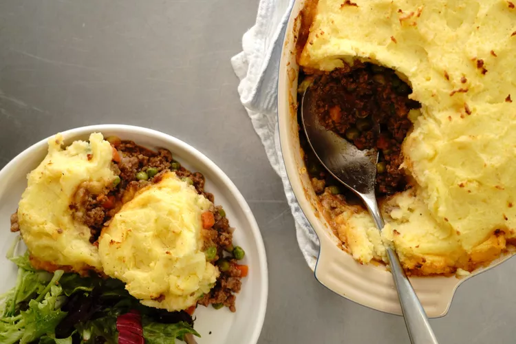

Shepherd's Pie
Home

Description
Think of a deep-dish casserole filled with ground or minced meat, savory gravy, and chopped vegetables,
all topped with mashed potatoes and baked until bubbling hot inside and golden
brown across the top. This classic comfort food dish goes by different names
in various countries where you'll find local versions of shepherd's pie:
"hachis Parmentier" in France or "pastel de papas" in Chile, for example.
Ingredients
- 3 pounds Yukon Gold potatoes
- 1 tablespoon kosher salt
- 1/4 cup of milk
- 3 tablespoons salted butter, divided
- 1 cup shredded white Cheddar cheese
- 1/4 cup sour cream
- 1 large egg yolk
- 2 teaspoons kosher salt, divided
- 1 teaspoon ground black pepper, divided
- 1 tablespoon olive oil
- 1 cup diced onion
- 1 cup diced carrot
- 1 pound ground lamb
- 1 pound ground beef sirloin
- 3 tablespoons all-purpose flour
- 1 teaspoon finely chopped fresh rosemary
- 1 teaspoon finely chopped fresh thyme
- 1 cup beef stock
- 1 tablespoon tomato paste
- 1 tablespoon Worcestershire sauce
- 1 cup frozen green peas
- 1 tablespoon chopped fresh parsley, or to taste
Steps
- Place potatoes in large saucepan and add enough water to cover by 2 inches. Stir in 1 tablespoon salt and place pot over medium-high heat; bring to a boil. Cook until potatoes are fork tender, about 10 minutes. Turn off the heat and drain.
- Return potatoes to the hot pan and set over the same burner. Add milk and 2 tablespoons butter; allow butter to melt from the residual heat. Mash potatoes with a potato masher until smooth. Stir in Cheddar cheese, sour cream, egg yolk, ½ teaspoon salt, and ¼ teaspoon pepper. Set aside while you prepare the filling.
- Preheat the oven to 375 degrees F (190 degrees C). Grease a 9x13-inch casserole dish.
- Heat olive oil and remaining 1 tablespoon butter in a large skillet over medium-high heat. Add onion and carrot and cook, stirring constantly, until onion begins to turn translucent, about 5 minutes.
- Add lamb and beef and cook, crumbling with a spoon and stirring often until browned, about 5 minutes. Sprinkle meat mixture with flour, remaining salt and pepper, rosemary, and thyme. Cook, stirring constantly, for 2 minutes.
- Add beef stock, tomato paste, and Worcestershire; cook, scraping any flavorful bits from the bottom of the skillet. Bring mixture to a simmer. Cook until thickened and vegetables are tender, about 8 minutes. Stir in peas. Transfer mixture to the prepared casserole dish and top with the prepared mashed potatoes.
- Bake in the preheated oven until golden and bubbly around the edges, 25 to 30 minutes. Sprinkle with parsley and serve.
Back to Top